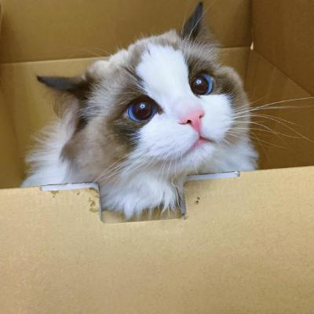

|
Pengfei Guo(虢鹏飞)
|
 |
Let's put a cute and adorable cat image on the avatar for now,
Research Assistant,
ShanghaiTech University,
No. 393 Middle Huaxia Road,
Shanghai, China
E-mail: 18769939178@163.com
|
About me
I am a research assistant working in the School of Information Science and Technology, ShanghaiTech University.
Research
My research interests include:
3D Perception MultiModel Learning Computer Vision
Current work
Try to do some useless but hands-on projects and competitions Delve into the paper and try to reproduce it (although I often don't know how to reproduce it, and I can't understand the paper) Complete my graduation project
Under review
Pengfei Guo, Ziheng Hou, Wenhai Liu, Mengshuai Cao, Wenchao Wu, "Family service robot intellisense and autonomous navigation technology research", ICAIR 2022， EI检索 [PDF]
（This is a very watery paper with little reading value. In fact, I just organized the competition content as an attempt to complete it as an academic writing. This is also my first paper.）
Recent publications
It seems like this place is empty
Note: * indicates the corresponding author.
Project
Multi Agent Environment and Modeling(军事科学院横向项目) | 方案设计与设备选型 | 2021.11 - 2022.11 NCEPU-thesis 华北电力大学本科毕设LaTeX模板(开源项目) | 主要维护者 | 2022.12 - 至今 基于SLAM与计算机视觉的自主导航机器人 | 项目技术负责人 | 2021.01-2023.05
作为项目负责人，申请并主持大创五项与河北省科技厅大学生科创项目两项，同时作为队长参加智能车竞赛，并且发表相关论文一篇
（实际上申请这么多项目是因为没钱买设备来组装机器人，所以多申请两个项目了就） 项目内容为复杂环境下，无人机通过SLAM进行自主导航，使用视觉算法进行目标搜索（感觉做的很不学术的那种） 学习使用PX4、ROS、PyTorch等工具或框架，并且阅读和复现多篇经典论文（主要是学习，经典论文都是最基础的AlexNet这种） 负责整体项目设计、SLAM与路径规划部分代码构建以及整体环境部署
RoboMaster机甲大师步兵项目 | 项目负责人 | 2022.11 - 2023.06
负责与老师、队员、院系、RM官方进行沟通、协商等 负责视觉部分的工程实现与部署，基于YOLO项目完成目标检测与分割等任务 负责电控部分的理论分析与实现，基于官方代码进行重构与优化 大概是本科阶段最后一个项目了，虽然因为种种原因，最后并没有登上机甲大师的赛场，但是过程中也学到了很多但是过程中也遇到了诸多解决不了的问题
Education
B.E., Measurement and Control Technology and Instruments, North China Electric Power University, 09.2019 - 06.2023
A brief cv（中文的）.
|